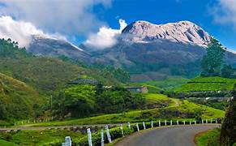
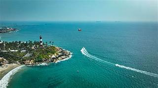

Name: Anil Nair
Phone: +91 9876543210
Email: anilguide@gmail.com
Munnar is a beautiful hill station located in the Western Ghats and was once a summer resort for the British.
Famous for tea plantations, misty mountains, waterfalls and cool climate.
By Air: Kochi International Airport
By Train: Aluva Railway Station
View on Google Maps
Alleppey, also known as Alappuzha, is a city famous for its network of backwaters.
Known for houseboat cruises, lagoons and beautiful backwater scenery.
By Air: Kochi International Airport
By Train: Alappuzha Railway Station
View on Google MapsWayanad is a district in Kerala known for its rich tribal heritage and forests.
Famous for wildlife sanctuaries, waterfalls, caves and trekking.
By Air: Calicut International Airport
By Train: Kozhikode Railway Station
View on Google MapsKochi is a historic port city that was an important trading center for spices.
Known for Chinese fishing nets, Fort Kochi and colonial architecture.
By Air: Kochi International Airport
By Train: Ernakulam Junction
View on Google MapsKovalam is a coastal town near Thiruvananthapuram known for its beaches.
Popular for lighthouse beach, surfing and relaxing sea views.
By Air: Trivandrum International Airport
By Train: Thiruvananthapuram Railway Station
View on Google Maps